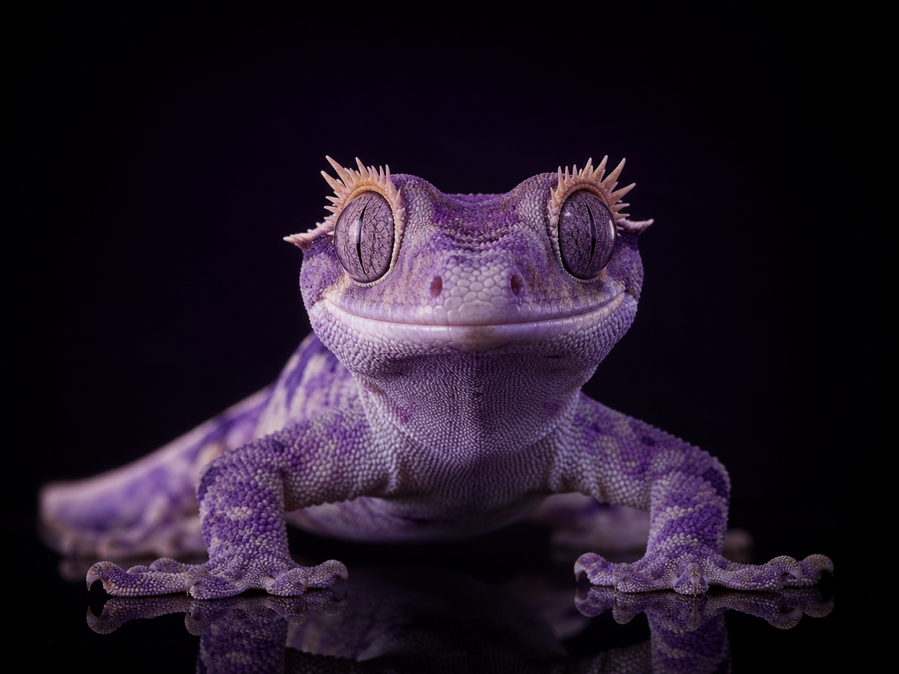
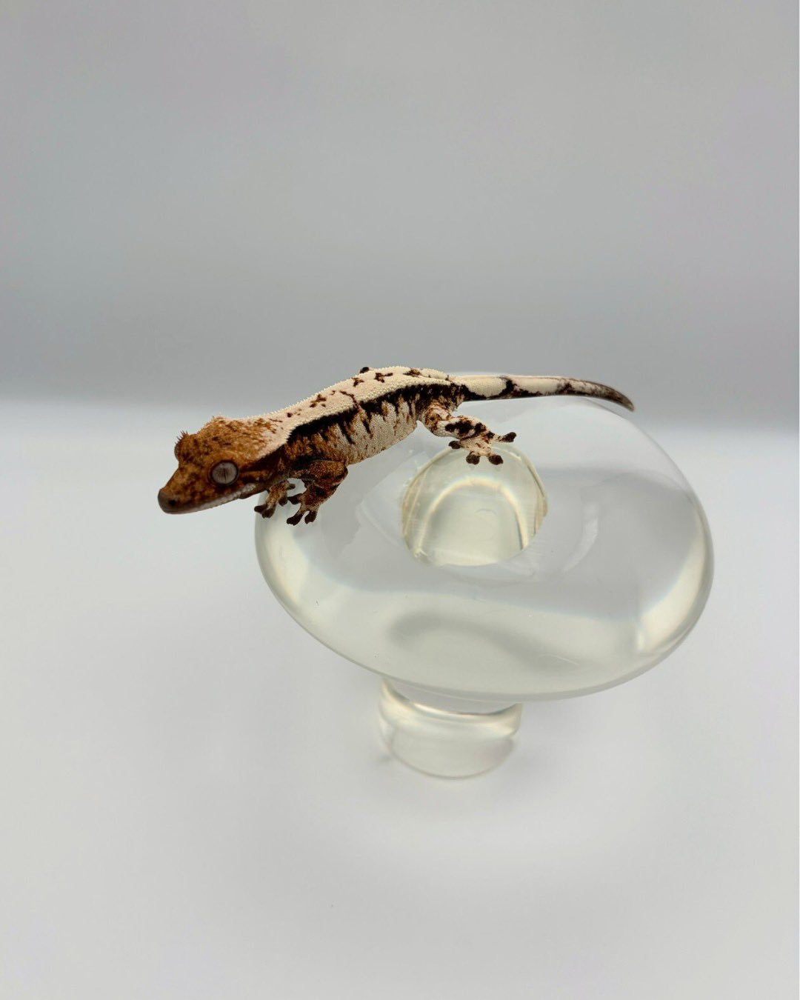

ORIGIN
从一身紫
开始。
CHW 的第一眼不是耀眼，而是克制。我们从色泽与背线开始记录，让紫色先拥有秩序。

一身紫，从亲本记录开始。
THE SIGNATURE
CHW 是 LUKA 的招牌主线：我们不追逐单一颜色，而是记录覆盖率、边缘、背线与成长后的稳定度。
查看完整基因谱系 ↗02 / 06 · CHW SIGNATURE LINE
向下滚动，
让 CHW 自己展开。
ORIGIN / 起点
全身紫调 · 清晰背线
ORIGIN
CHW 的第一眼不是耀眼，而是克制。我们从色泽与背线开始记录，让紫色先拥有秩序。
STRUCTURE
静息与起色之间，紫色会呈现不同的温度。LUKA 将每次蜕皮后的变化写进档案。
PROOF
从亲本、孵化到交付，CHW 的每个阶段都有记录。稀有不是承诺，是一条可被回看的成长曲线。
03 / 06 · LUKA GENE MAP
选择一条主线，
查看它的视觉坐标。
从底色、背线到覆盖率，建立每条主线的视觉坐标。

SABLE / CORE LINE深烟棕底色 / 奶油背线 / 低饱和层次
以深烟棕收束光线，奶油背线沿轮廓展开。底色的均匀度、背线的连续性与静息时的低饱和层次，共同构成 Sable 的识别秩序。
从深烟棕到冷灰与珍珠白，五条主线以色泽、结构与成长轨迹建立各自的坐标。
04 / 06 · THE RECORD
稳定血系
STABLE LINES
健康个体
HEALTHY ANIMALS
平均孵化率
HATCH RATE
每一个数字背后，
都有一份可以打开的档案。
05 / 06 · THE METHOD
三步，构成 LUKA 的标准。
SELECT
RAISE
VERIFY
06 / 06 · AFTERCARE
根据季节与个体状态，建立可呼吸的昼夜节律。
°C从完整主粮出发，按成长阶段调整补充。
✦出发前确认天气、路线与接收窗口，全程可追踪。
↗任何蜕皮、进食或性格问题，都可以回来问我们。
∞PRIVATE INQUIRY
预约制选育，48 小时内回复。告诉我们你在寻找的颜色、性格与生活方式。